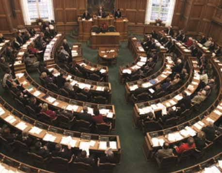
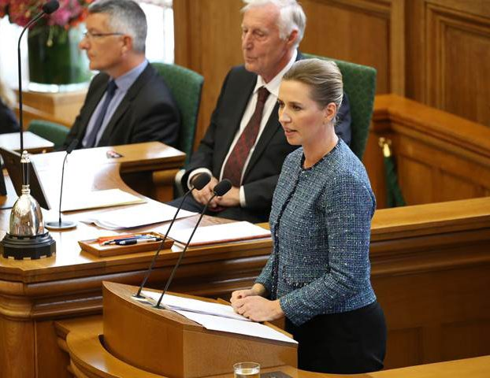

Fakta-ark 13: Folketing
Áudio
sidde 71
Fakta-ark 13: Folketing og regering
Læremateriale Til Medborgerskabsprøven

sidde 72
Danmarks parlament hedder Folketinget. Folketinget arbejder på Christians borg i København og udgør sammen med regeringen den lovgivende magt.
Læremateriale Til Medborgerskabsprøven Fakta-Ark 13: Folketing Og Regering
Dette fakta-ark handler om: • Folketinget • Regeringen • Det repræsentative demokrati
Folketinget
Folketinget er Danmarks parlament. Folketinget har 179 medlemmer. To er valgt på Færøerne og to i Grøn land, mens de øvrige 175 er valgt i Danmark. Medlemmerne af Folke tinget er næsten altid medlem af et politisk parti.
Folketinget arbejder på Christians borg i København og udgør* sammen med regeringen den lovgivende magt. I Folketinget diskuteres og vedtages de forslag, som bliver til landets love. Folketinget har også andre opgaver end lovgivning. Det er Folketinget, der bestemmer, hvem der skal danne regering efter et valg. Desuden er det en vigtig opgave for Folketinget at kontrollere regeringen. Folketingsmedlemmer kan fx kræve, at en minister svarer på spørgsmål om en bestemt sag.
Folketingssalen.
Det danske demokrati er et parlamentarisk demokrati. Det betyder, at Folke tinget bestemmer, hvem der skal have regeringsmagten, idet en regering ikke kan udnævnes*, hvis den har et flertal i Folketinget imod sig. Og hvis en siddende regering får et flertal i Folketinget imod sig i en sag, som den selv tillægger* stor betydning (som fx finansloven), kan det ske, at regeringen går af eller vælger at udskrive valg.
Folketingets medlemmer diskuterer politik og nye lovforslag, og de vedtager lovforslag på møder i Folketinget. Møderne er normalt offentlige. Det betyder, at man som almindelig borger normalt kan sidde på tilhørerpladserne og over være politikernes diskussioner i Folketinget. Man kan også se tv fra Folketinget Folketingss
Danmark har ikke, som visse andre lande, et såkaldt overhus, der skal godkende Folketingets beslutninger.
Det politiske arbejde i Folketinget

sidde 73
på Folketingets hjemmeside og i fjernsynet på den særlige folketingskanal. På Folketingets hjemmeside kan man se, hvilke love og politiske emner der disku teres i Folketinget på en bestemt dag.
Læremateriale Til Medborgerskabsprøven Fakta-Ark 13: Folketing Og Regering
En vigtig del af Folketingets arbejde er at diskutere og vedtage lovforslag. Hver onsdag er der spørgetid i Folke tinget. Her svarer en eller flere mini stre på spørgsmål fra medlemmerne af Folketinget, og spørgeren og mini steren diskuterer svaret. På den måde kan folketingsmedlemmerne kontrol lere, at ministrene fører* lovene ud i livet på den rigtige måde, eller have en mere generel politisk drøftelse* med ministrene.
Folketingsmedlemmerne kan stille skriftlige spørgsmål til ministrene, som de så enten besvarer mundtligt i folketingssalen eller skriftligt direkte til spørgeren. Ministerens skriftlige svar er som udgangspunkt offentligt tilgængelige*.
Statsminister Mette Frederiksen på Folketingets talerstol. Foto: Statsministeriet.
Det politiske arbejde i Folketingets udvalg
Medlemmerne af Folketinget mødes ikke kun i folketingssalen. De er også medlemmer af Folketingets faste udvalg, der i opdeling nogenlunde svarer til de forskellige ministerier. Der er fx udvalg, der arbejder med beskæftigelse, forsvar og fødevarer.
I udvalgene behandles de fremsatte lovforslag, og udvalgene stiller ofte en lang række spørgsmål til den pågældende minister. Der skal være tre behandlinger af alle lovforslag i Folketinget, før det kan vedtages, og forslagene diskuteres og gennemarbejdes i udvalgene mellem de tre behandlinger i Folketinget.
Borgerne kan frit skrive til medlemmer af Folketinget, hvis de fx vil gøre opmærksom på et problem i samfundet. Alle Folketingets medlemmer modtager mange af den slags henvendelser fra borgerne.Statsminister Mette Frederiksen på Folketingets talerstol. Foto: Statsministeriet.
Borgere eller foreninger kan også bede om at mødes med et folketingsudvalg. Man kan skrive, e-maile eller ringe til udvalget for at redegøre* for sin sag og evt. bede om et møde med udvalget, som så kan stille opklarende spørgsmål.
Udvalget arbejder med den generelle lovgivning inden for udvalgets område. Eksempelvis arbejder Retsudvalget med bl.a. politi, domstole og straf, og Europa udvalget med Danmarks forhold til EU. Antallet af udvalg kan variere.
Christiansborg i København med Folketinget. Rundt om ligger Højesteret og mange af ministerierne. Foto: Tue Schou Pedersen
sidde 74
Læremateriale Til Medborgerskabsprøven Fakta-Ark 13: Folketing Og Regering
Christiansborg i København med Folketinget. Rundt om ligger Højesteret og mange af ministerierne. Foto: Tue Schou Pedersen
Regeringen
Regeringen udgør som nævnt en del af den lovgivende magt. Regeringen har også den udøvende magt. Det betyder, at det er regeringen sammen med de andre offentlige myndigheder, der gennemfører og administrerer den lovgiv ning, som er vedtaget i Folketinget. Det sker gennem ministerierne. Men rege ringen tager sig ikke kun af administrative opgaver. Regeringen udgør den poli tiske ledelse af landet, og det er fx regeringen, der kommer med langt de fleste lovforslag.
Når et lovforslag bliver vedtaget af Folketinget og underskrevet af Kongen og den relevante minister, er det ministrene sammen med embedsmændene i ministerierne og andre offentlige myndigheder, der skal sørge for, at loven bliver gennemført. Men det er de enkelte ministre, der er ansvarlige for, hvad der foregår i deres ministerium.
Statsministeren leder regeringen, som normalt består af ca. 20 ministre. Som regel er ministrene medlemmer af Folketinget, men de behøver ikke at være det. Det er alene statsministeren, som bestemmer, hvem der skal være minister, og hvor mange ministre der skal være i en regering. Normalt har hver minister et ministerium, som han eller hun leder og har det øverste ansvar for. Der er fx ministerier for skat, kultur, forsvar og undervisning og sundhed. Én person kan dog godt være minister for mere end ét ministerium.
Ministerierne kan også lægges sammen, der kan oprettes nye ministerier, eller opgaverne kan flyttes rundt fra ét ministerium til et andet. Det bestemmer stats ministeren. Det sker som regel efter et folketingsvalg, når der er kommet en ny regering. Men det kan også ske i løbet af en valgperiode.
sidde 75
Regeringspartierne er de politiske partier, der har ministre i regeringen. Nogle gange ligger regeringsmagten hos ét parti, men som regel har flere partier regeringsmagten sammen.
Læremateriale Til Medborgerskabsprøven Fakta-Ark 13: Folketing Og Regering
Når flere partier sammen har regeringsmagten, kaldes det en koalitionsregering.
Langt de fleste regeringer siden 2. Verdenskrigs afslutning i 1945 har været mindretalsregeringer. Det gælder også den nuværende regering, der består af fire partier Socialdemokratiet, SF, Moderaterne og Radikale Venstre. Derfor er der i Danmark tradition for samarbejde på tværs af partierne, dvs., at regeringen forhandler* med de andre partier i Folketinget for at få støtte til vedtagelsen af sine lovforslag. På mange områder er det almindeligt, at en regering laver aftaler med et eller flere af de partier, som ikke er regeringens støttepartier.3. juni 2026. En ny regering træder ud på Amalienborg Slotsplads efter at være blevet præsenteret for kongen. I forreste række partiformændene for de fire re
Hvis regeringspartierne sammen har flertal i Folketinget, taler man om en fler talsregering. Hvis regeringspartierne ikke har flertal i Folketinget, kaldes rege ringen en mindretalsregering. En mindretalsregering er afhængig* af støtte fra andre partier i Folketinget, hvis den skal have sine lovforslag vedtaget. De partier uden for regeringen, der støtter en mindretalsregering, kaldes ofte støttepartier.
3. juni 2026. En ny regering træder ud på Amalienborg Slotsplads efter at være blevet præsenteret for kongen. I forreste række partiformændene for de fire regeringspartier: (fra venstre) Lars Løkke Rasmussen (Moderaterne), Mette Frederiksen (Socialdemokratiet), Pia Olsen Dyhr (SF) Martin Lidegaard (Radikale Venstre). Søren Bidstrup/Ritzau Scanpix.
Det repræsentative demokrati
Danmark er et repræsentativt demokrati. Det betyder, at folket vælger de poli tikere, de er mest enige med, til Folketinget. Det er altså politikerne, der som folkets repræsentanter tager sig af lovgivningen. Det er sjældent, at et lovfor slag lægges ud til folkeafstemning. Faktisk har der kun været afholdt 16 folkeaf stemninger, siden den nuværende grundlov blev vedtaget i 1953. Over halvdelen (ni ud af 16) har handlet om Danmarks forhold til EU.
Fonte: Læremateriale til Medborgerskabsprøven, SIRI.